大前天的文章出来之后，朋友说廖一梅和黎星的粉丝写出这样的文章很令人诧异。大概是觉得长期接受先锋剧作熏陶的人、熟练情绪运用的粉丝，在文章里提醒自己对观点和情绪更加慎重，显得是一件有些违和的事情。
其实倒也不能这么说。越是在各种情绪和生活中出离来去的人，反而会对一点一滴的改变更加敏感。也许和在各种财务报表中游走浮沉的人，对假账可能在的地方更审慎是一个道理，因为知道自己下一步再往前走会去到什么阶段、平台、有什么后果。我曾经不止一次在那些碎碎念里说自己的天赋在做一个connector, to make sure each and every part present and function inits particular routine. 侧写中的细小情绪警惕，和我用整个作为理科生的时间里训练起来的思维并不矛盾。有点像唯意志论在我这里被划为暴戾美学。
朋友说醒来不清醒的时候看我发来的这张图，以为写的是“你玩过我吗”。那么这张图的沙雕再创作就又加了一层。
前天的元宵节过后，传统意义的年节就真的过去了。这是一个消费欲极低的新年，低到我甚至在朋友圈都懒得给朋友点赞。
当然最后的结果都是又回到了我的舒适区，继续看PS实战、数据挖掘实战、以及机器学习和线性代数的公开课。找点好看的图放在这里。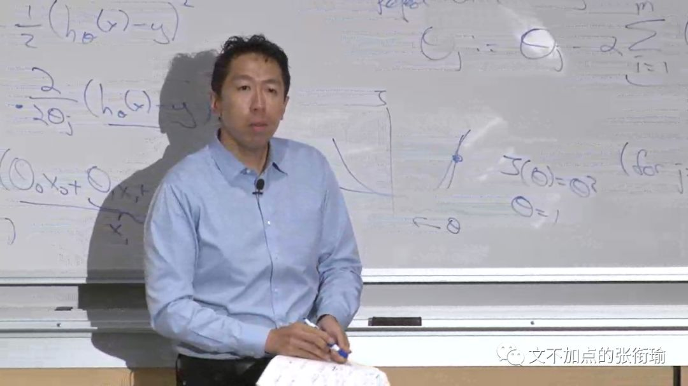
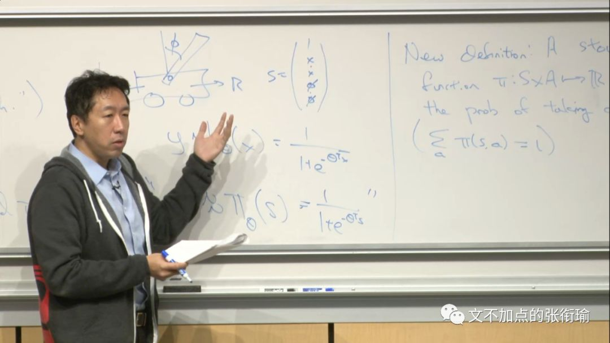


要我说，最好的还是对外经贸大学的财务报表分析。看了这个课之后我晚上直接从十点半睡到今早六点五十。醒来之后等天慢慢蒙蒙亮，精神非常好。
配色和胶粒感十足的Gloomy Sunday 中文名是布达佩斯之恋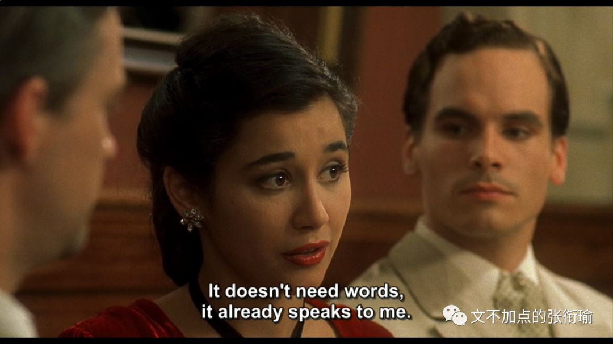
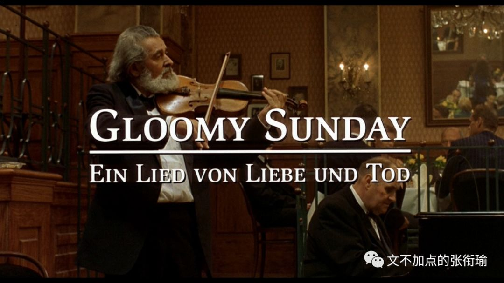
截下来的每一帧都发现以前早有人做过头像了的请回答1988，甚至有朋友说看到票圈更新点进去以为是自己实习公司的HR发了什么消息赶紧看看。我的审美已经和公司HR的审美这么趋同了吗？

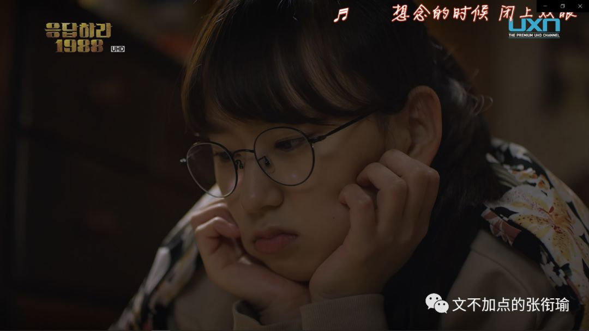
值得一提的是Bojack horseman S06, last episode, 终章了；Rickans Morty, 随着那位特立独行人的离开, 也远去了。那么人们还有什么? 等到 Agents of SHIELD S07 也完结的那一天, 从少年时代追起的剧就都正式成为过去。人们将不仅没了那时候的心气, 至于剧作作品，也没有了。倒也不必说人们，说不定是单数。（传送门：攒够了失望、只是尽可能简单却不再简化）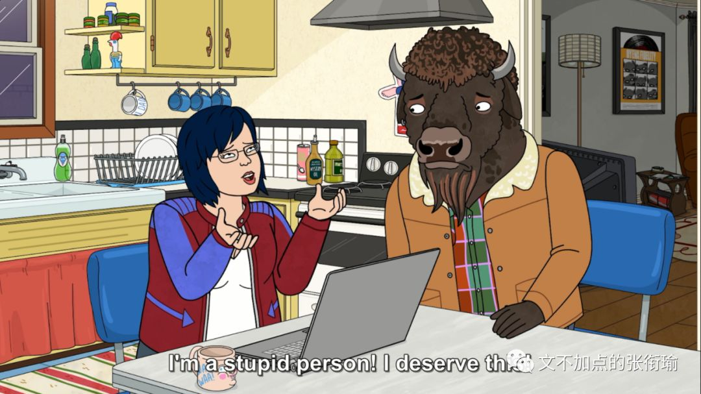

言疫情过去之后，说有什么想见的人，未免对单身狗过于扯淡。但我真情实感恳恳切切地想正大光明堂堂正正地感冒一次，咳嗽、发热、低烧、呕吐。桌面上有我刚冲好的小柴胡，朋友会传讯息来问我要不要维C银翘片和头孢克肟。
有句《圣经》上的话来到我嘴边，但我没有说出来，因为我知道神职人员认为俗人侵犯他们的领地是有点亵渎上帝的。我的叔叔亨利做过二十七年惠特斯布尔的教区牧师，要是遇到这种情况，他往往会说，魔鬼总是随心所欲的引用经文。他记得从前一个先令就能买到十三只上等的牡蛎。
没有求证出处是因为我懒，而且不愿意改变懒的事实和心理
修图倒是修了很多图。模仿sufjan3066同学的手法，裁成16:9的图样了之后再把水印和好听的句子写在下方。横屏观察的时候就像电影一样。


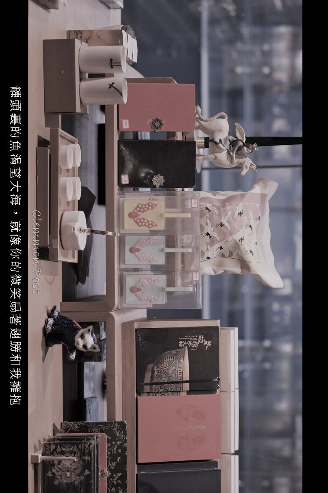


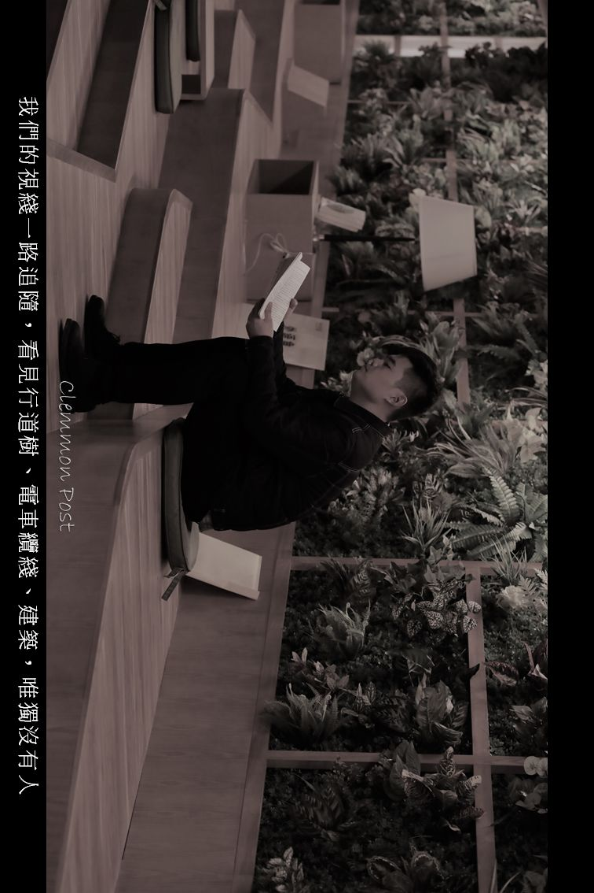
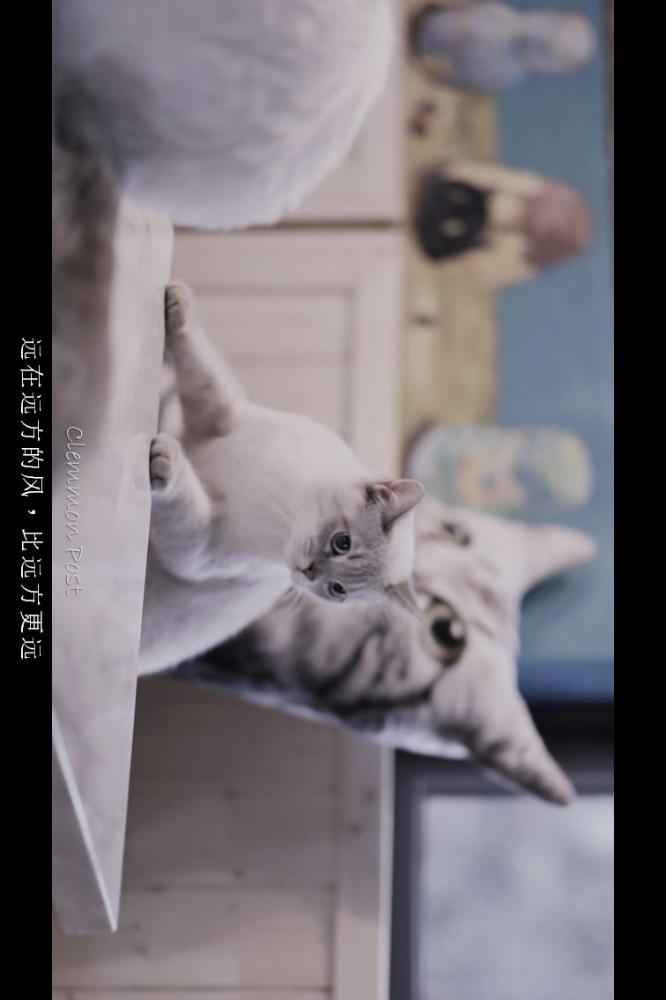
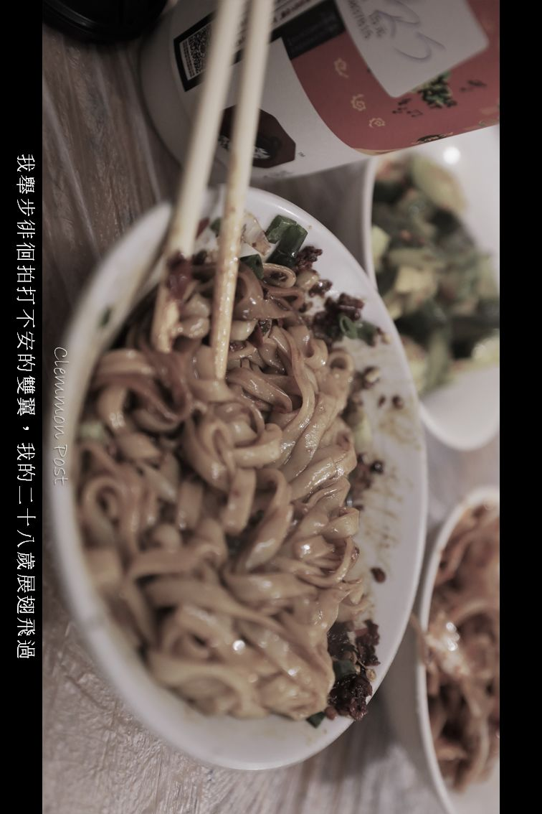
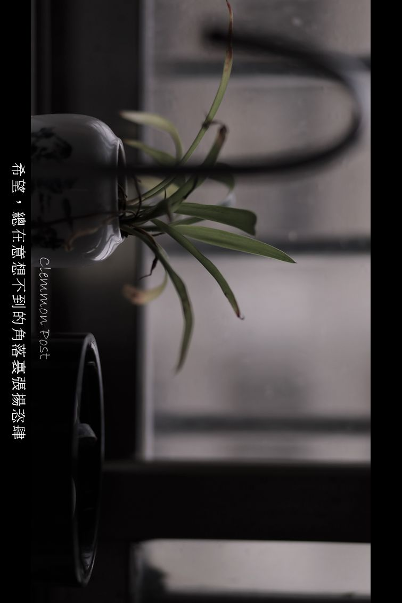
我记得是有一篇我写的影评还是那段时间的生活随笔小札里，大段地引用过这场台本里的话。
我的名场面应该是问一下傻子和白痴、鲸鱼马戏团、告五人、四喜、甜约翰、茄子蛋、白日密语，看看你们这几个乐队怎么都取些这么难听的名字但是写了那么好听的歌。最近总是一个歌手一个歌手地把别个整个歌单全部听完。像极了考古完新认识或者老相识朋友的所有社交网络痕迹。搞得我每次给别人介绍的时候都还要说清楚，我刚刚说的到底是一首歌的名字还是这个乐队的名字。